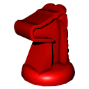

"Thrones is a game designed to cultivate cunning and strategic maneuvering on a battlefield created by you, your opponent, and the battle between you.
The struggle for supremacy will take many forms as your infantry melee, cavalry charge, and artillery fire.
You may strike with your Throne’s royal guard or unleash a Dragon on any challenger to your claim. Not even fate itself is out of your influence and reach.
Your enemies, however, are diverse, and their lands will be treacherous to a conqueror. Destruction of their armies is just one path to victory;
If you succeed in claiming their Fortress as your own, a pretender’s family will surely plea for peace, which you can consider as their army disbands in defeat."
While on Mountain, cannot be fired upon by any piece.
Spearman (marine infantry)
Always passes Water survival check.
While on Water, may move over any connected Water if only moving that turn.
Crossbowman (short ranged)
Fires on an adjacent tile except Forest.
Catapult (mid-ranged)
Fires on a tile that is two tiles away in a single direction except Forest.
Trebuchet (long ranged)
Fires on a tile that is three tiles away in a single direction.
Lancer (light cavalry)
While on Plains, may move over any number of connected Plains if only moving that turn.
Warhorse (armored cavalry)
Cannot be attacked if it removed a piece during the previous turn.
May switch positions with any number of allied and enemy pieces if not attacking that turn.
Elephant (heavy cavalry)
Cannot be engaged if occupying a Plains except by a Dragon.
Dragon (wild beast)
May move up to four tiles and attack in any single direction.
Only an enemy Dragon & firing pieces can block it’s movement.
Always passes both survival checks but cannot attack Forest.
Throne (royal guard)
Always passes Survival Checks while attacking any piece/tile including Elephants, Warhorse and unbreached Fortress tiles.
Playing The Game
Your Turn
Each player must choose to either move/switch pieces, attack, or fire each turn.
Move and/or Switch pieces in any order
Move a piece one tile in any direction, unless otherwise specified.
Switch positions with an adjacent, allied piece of a different type.
Engage another piece or occupied Fortress either by
Attacking: Occupying a tile and removing it's piece.
Firing: Removing a piece on a different tile without moving.
Survival
If a piece is move/switching from, attacking onto/from, or firing onto/from a Mountain or Water tile, a Survival Check is made to see if fate impeded its efforts.
This is done by flipping a coin, rolling an even-numbered die, or using the #2 method in Standard Gameplay.
Remember, if a piece is only moving onto a Mountain or Water tile, no check occurs!
Survive the check with an even number; the piece may move, attack, or fire that turn.
Fail the check with an odd number; the move/firing does not occur, and the player ends their turn. If the check failed during an attack, the piece is removed from the game.
If Rangers switch positions with a piece occupying a Mountain, or if Spearmen switch positions with a piece occupying Water, both pieces always pass the Survival Check that their switching piece always passes that turn.
Then a Dragon Showed Up
If they did not place it at the beginning of the game, a player may choose to use their turn to place their Dragon on any unoccupied, homeland Mountain.
Alternately, they can choose to place it in their homeland Fortress and restart that turn, removing any piece (opponent or allied) occupying that Fortress from the game.
Breaching Fortresses
A piece occupying a Fortress cannot be engaged until the Fortress is breached. A successful attack or firing (determined by a Survival Check) breaches the Fortress tile.
A breached Fortress is flipped upside-down, and its occupant now vulnerable to attack next turn. The Fortress does not restore itself until it is unoccupied at a turn’s end.
A Throne’s attack will breach the Fortress AND remove it’s occupier in one move.
A Warhorse can switch positions with a piece occupying a Fortress but it cannot switch positions with an enemy Warhorse in any circumstances.
Fate’s Favor
When the game starts with a Throne occupying a Fortress, and/or when the Throne occupies a Fortress different from the one it did previously, it’s controller gains a special, single-use Fate’s Favor tile (indicated by taking one of the extra tiles the game has)
Haste (Plains): Adds 1 tile of movement to an allied piece that player controls.
Ambush (Forest): Switches positions of two allied pieces on Forests that player controls.
Cunning (Mountain): Automatically pass a Survival Check that player controls.
Deception (Water): Switches positions of any two adjacent pieces without Survival Check.
There is a max of any 4 total per player. Only one FF tile may be spent by each player per turn. A player only needs to reveal what FF tile they have when they use that particular tile. They can use one at any time.
Gameplay
Each player gets 15 Pieces: 11 Plains, 10 Forest, 7 Water, 7 Mountain, and 1 Fortress.
Players choose even or odd, and hold numbers on their hands behind their backs and reveal them simultaneously; the sum of the numbers decides who goes first. Survival Checks can also be resolved this way.
Set rule board as a screen so players cannot see opponent's homeland, and then lay pieces and home tiles; at least one of each tile type must be in each of the 4 rows and Fortresses cannot border game board boundaries.
Each player is given 4 tiles (one of each type) and puts them between their front tile row and the screen, intended as where they want them placed in the middle row.
Remove screen. If both players have set middle row tiles for the same contested place, first place all uncontested tiles down in the middle row; then move both contested tiles to the leftmost open space of the player that is moving first, starting from their left.
The middle row Fortress occupies wherever no tile was set, after all 8 tiles are set.
Whichever player goes first cannot attack/fire that turn. Winning requires the removal of your opponent's Throne or occupying the opponent's homeland Fortress with your Throne.
 Mountain
Mountain Fortress
Fortress